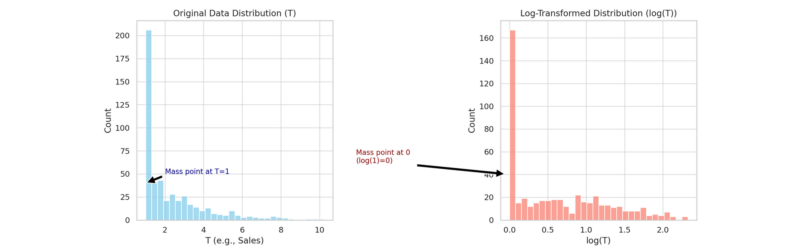
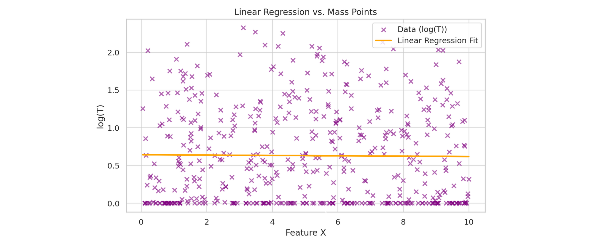

When Linear Regression Gets Massively Confused
This one is about a failure mode I keep running into: a mass point, a large cluster of identical values in your data, quietly breaking linear regression. It often shows up right after a log transform, and the symptoms are easy to misread.
What a mass point is
Say a large number of your observations share the same value, for example a crowd of customers who all bought a $1 product. You log-transform sales to make the distribution more normal, and every one of those $1 values collapses to zero, since \log(1) = 0. Now the transformed data is dominated by a spike of zeros.
Visually: the original data has a tall spike at T=1, and after the log transform that spike moves to 0 and gets taller relative to everything else.

Why linear models struggle with it
Linear regression leans on a few assumptions:
- Linearity: the relationship between predictors and outcome is linear.
- Independence of errors: residuals are independent of each other.
- Homoscedasticity: residuals have constant variance across all levels of the predictors.
- Normality: residuals are roughly normally distributed.
A mass point mainly attacks the last two. With a big concentration of identical values (here, the spike at \log(1) = 0), two things go wrong:
- Non-normal residuals. The mass point pulls residuals toward itself, introducing asymmetry and distorting their spread, so they no longer sit balanced and normal around zero.
- Heteroscedasticity. Residual variance stops being constant, because the model can’t fit the dense region and the sparse region equally well. That matters because non-constant variance gives you biased standard errors (so t-tests and confidence intervals become unreliable) and inefficient estimates (predictions are less precise than they could be).
The net effect: the model tries to fit a straight line through data that violates its own assumptions, and you get biased or inefficient estimates. On a scatter plot you can see the fitted line bending awkwardly around the cluster at zero.

Models that handle it better
Instead of forcing a single linear fit, use a model that explicitly accounts for the mass point. Three options, with tradeoffs:
| Model | Key idea | Pros | Cons | When to use |
|---|---|---|---|---|
| Hurdle | A classifier first decides whether an observation is in the mass-point group; a separate regression models the continuous values for the rest. | Cleanly separates the spike from the continuous part. | Two models to fit and coordinate. | A mix of a mass point (e.g. lots of T=1 or zeros) and continuous data. |
| Mixture | Model the data as a blend of two distributions: one for the spike, one for the smooth continuous part. | Flexible, captures distinct subpopulations in one model. | Harder to fit; estimating the mixture components can be unstable. | Data that naturally splits into a sharp spike plus a smooth distribution. |
| Zero-inflated | A logistic component models excess zeros; a continuous model handles the rest. | Purpose-built for far more zeros than a standard model expects. | Best only when the mass point really is at zero; more setup. | An unusually high count of zeros (or one specific mass point). |
Takeaway
A giant spike at zero in log-transformed data is a signal, not noise to ignore. Linear regression will fit it, but the standard errors and efficiency you rely on quietly stop being trustworthy. A hurdle, mixture, or zero-inflated model fits the structure of the data instead of fighting it.
Appendix: why heteroscedasticity matters
Effect on the estimates
- Biased standard errors. Under heteroscedasticity the standard errors of the coefficients are unreliable, which throws off confidence intervals and hypothesis tests and raises the chance of Type I or Type II errors.
- Inefficient estimates. OLS stays unbiased, but it is no longer the best linear unbiased estimator (BLUE). The estimates have higher variance than necessary, so they are less precise.
Why efficiency is worth caring about
Efficiency means getting estimators with the smallest possible variance. It buys you two things:
- Precision. Tighter confidence intervals, so the estimates are more reliable.
- Statistical power. More precision means tests are likelier to detect real effects, lowering the risk of Type II errors.